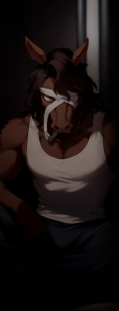
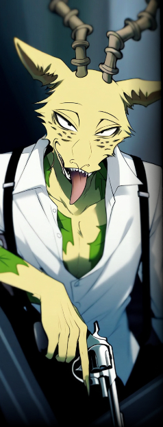

▼【 能力者解放戦線 】＜＜目次へ戻る
ラグナロク以前から存在し、エクシード差別撤廃の運動を武力闘争で行う過激団体。
複雑な経緯を辿っている組織で、
特に異能主義を掲げた【テセウス】のラグナロク敗北、【グングニル】への服従宣言は彼らに大きな衝撃を与え、
その性質上、参加者の大半はエクシードだが、中でも外見の変化から最も差別を受けやすいトランサーが大部分を占める。
主な活動内容は現状のノーマル体制と特区エデンの解体を目標としたテロ・ゲリラ。 シェアワールド原文
ラグナロク以前から存在し、能力者差別撤廃の運動を武力闘争で行う過激団体。キーワードは【差別解放】【革命】
主な参加者は以前から差別対象であったトランス能力者、非差別能力者であるが
代表者は【ヤフヤ】と呼ばれる馬のトランサーであるが、グングニルにより投獄されている。 |
|
 |
ヤフヤ
|
||||||||||||||||
|
能力者解放戦線の現代表を務める、ウマのミュータント。
上層の某・公会堂を占拠し、市民やＹＤＦに向けてクーデターを呼びかけるテロ事件を起こしたことで、現在は投獄中。
「我々は、ただ生き延びるためにここにいるのではない。誇りを持って存在するために、立ち上がるのだ」 |
|||||||||||||||||
思想について
収監以前から今現在に至るまで広く誤解されているが、彼の目的は単なる【差別撤廃】ではない。
彼は「能力者」という属性を、単なる異能の有無ではなく、
しかしその理想は、大衆には難解に過ぎた。 シェアワールド原文
【 タイトル 】ヤフヤ |
|||||||||||||||||
|
 |
メロン
|
||||||||||||||||
|
【能力者解放戦線】の前身団体、【解放前線】の発起人。つまり同組織の始祖にあたる人物である。
彼は優秀なエクシードだったが、実力を過信せず、“群れ”となって生きることを心がけた。
ところが、彼の目論見とは裏腹に結成されたグループは平和的な交渉活動を続けた。
結局、【解放前線】は始祖であるはずのメロンを切り捨てた。
「これくらい気にするなよ。バケモン同士だからこそ 助け合いって大事ってコト」 |
|||||||||||||||||
ヤフヤとの関係について
メロンに追放を宣告したのは、他ならぬヤフヤである。
ヤフヤとメロンは、若き日々を共にした「友人」だった。
一方でメロンは、ヤフヤを「駒」と見ていた。
だが時が経ち、状況は変わる。ヤフヤの思想は次第に組織内外で求心力を持ち始める。
さらに月日が経ち、結局ヤフヤは【暴力主義】というメロンと同じ轍を踏んだ。 シェアワールド原文
男性。享年45歳程度（性格な年齢は不明）。
メロンは幼少期から強力な能力を持っていることを自覚していたが、自分という"個"の力を過信する事は決してしなかった。
下層には彼のみならず、獣人、ミュータント、制御異常に陥ったトランサーのような異形の人間が少なくなかった。
しかし、それはメロンが望んだ組織ではなかった。
その後のメロンは、再起しようとした訳でも、絶望した訳でもない。
尚、メロンが追放された後も、彼の過激な思想自体は受け継ぐ者がいくらか居た。
能力……【愛の失敗作の復讐】(クリエイター) |
|||||||||||||||||
| ＜＜目次へ戻る | |||||||||||||||||